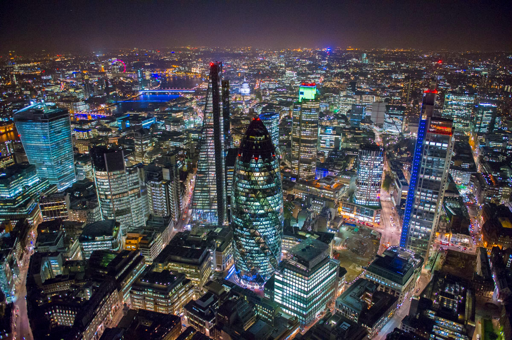
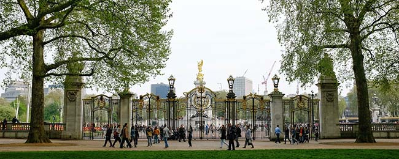

Londra - London
Città
Londra è la città più popolata di tutta Europa: in questo posto le persone migrano per cercare fortuna e per essere in continuo contatto con persone di tutte le culture. È inoltre dotata di infrastrutture e servizi molto avanzati sia per i turisti che per chi vi abita.
Trasporti
Se volete andare a Londra, uno dei mezzi più comodi e caratteristici di questa città è la metropolitana, chiamata in lingua inglese Tube oppure DLR, ovvero la metropolitana leggera. Vi è inoltre il servizio ferroviario urbano (chiamato Overground) e moltissimi bus rossi, caratteristici anche questi della città. Varie agenzie offrono dei biglietti per poter viaggiare un giorno o due su questi mezzi, a bordo dei quali si può sentire una guida in lingua inglese dal vivo o altrimenti nella propria lingua.
Vita notturna
 Londra riesce ad accontentare i gusti di ogni persona che vi viaggia: la capitale inglese è piena di locali etnici che presentano piatti di quasi tutte le culture del mondo, club di tutti i tipi. Se una persona preferisce farsi una passeggiata nel centro cittadino, rimarrà colpita dalle luci notturne della città e dagli spettacolari effetti che queste creano combinandosi tra loro.
Parchi
 Sebbene sia la capitale europea più popolata, non immaginatevi Londra come una metropoli grigia e cupa; viene dedicata una particolare attenzione agli spazi verdi, lasciando a bocca aperta i visitatori di tutto il mondo quando vi si trovano di fronte.
- Hyde Park
-
 Hyde Park è uno dei parchi più
conosciuti di questa città. Questo parco è diviso a
metà dal Serpentine Lake in due
parchi: il vero e proprio Hyde Park e
i Kensington Gardens, considerati
formalmente separati ma di fatto costituiscono un unico parco. Uno
dei quattro angoli di questo parco è il
The Speakers' Corner, ovvero una piccola zona dove chiunque
viene chiamato a esprimere in piena libertà la propria
opinione; personaggi illustri che hanno sfruttato questo posto per
dar sfogo alle proprie idee sono Karl Marx, Lenin,
George Orwell(una cui casa è presente a
Notting Hill) e William Morris.
Hyde Park è uno dei parchi più
conosciuti di questa città. Questo parco è diviso a
metà dal Serpentine Lake in due
parchi: il vero e proprio Hyde Park e
i Kensington Gardens, considerati
formalmente separati ma di fatto costituiscono un unico parco. Uno
dei quattro angoli di questo parco è il
The Speakers' Corner, ovvero una piccola zona dove chiunque
viene chiamato a esprimere in piena libertà la propria
opinione; personaggi illustri che hanno sfruttato questo posto per
dar sfogo alle proprie idee sono Karl Marx, Lenin,
George Orwell(una cui casa è presente a
Notting Hill) e William Morris.
- Regent's Park
- Questo parco ottocentesco, realizzato da John Nash, è uno dei parchi imperiali ed è situato nella zona di Westminster. In questo parco si trova il London Zoo, lo zoo più antico del mondo e vi si possono ammirare una quantità impensabile di animali.
- Green Park
- Green Park è un altro dei parchi imperiali di Londra. Questo parco è raggiungibile tramite un ingresso direttamente alla destra dell'entrata principale di Buckingham Palace, dove ogni due giorni viene svolta la sfarzosa cerimonia del cambio della guardia. Attraversando questo parco si può arrivare direttamente a Piccadilly Circus, piazza caratteristica ricordata da tutti i turisti grazie alle sue enormi pubblicità a LED.